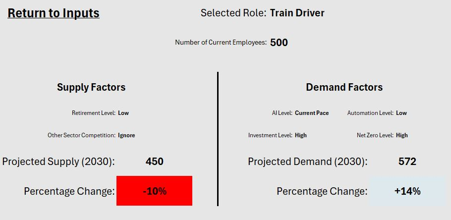

Workforce Analytics Scenario Planner (WASP)
A new NSAR service
NSAR’s new tool, the Workforce Analytics Scenario Planner, allows for interactive scenario-based workforce planning for the rail industry. It covers six factors that will shape the immediate future of both the sector’s supply and demand for labour, and unlike previous tools, is tailored to operate at job role level rather than industry level, allowing for more targeted analysis and therefore more informed workforce planning.
Users can choose either their own number of employees or an industry number, and project scenarios based upon six factors: Artificial Intelligence, Automation, Investment Levels, Net Zero, Other Sector Competition and Retirement Levels.
Outputs are tailored to the scenario selected, providing meaningful insight
